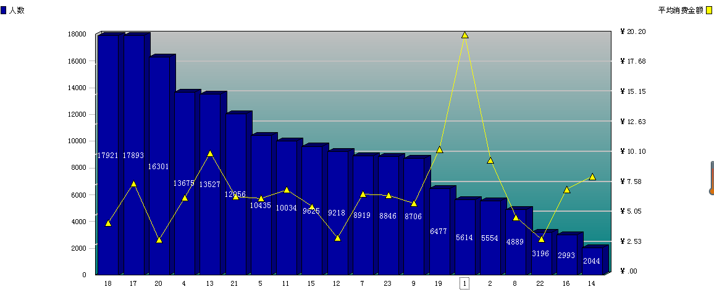
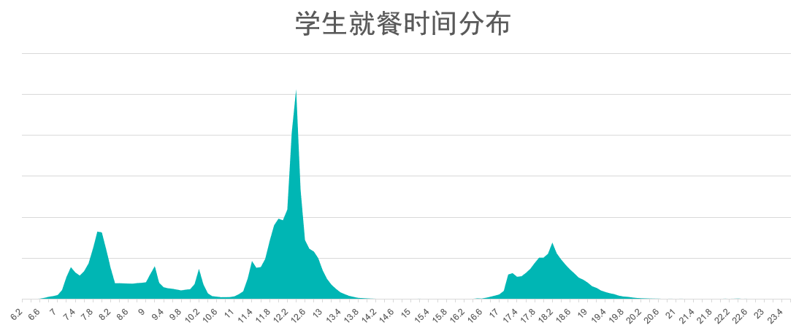
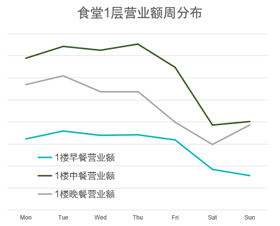
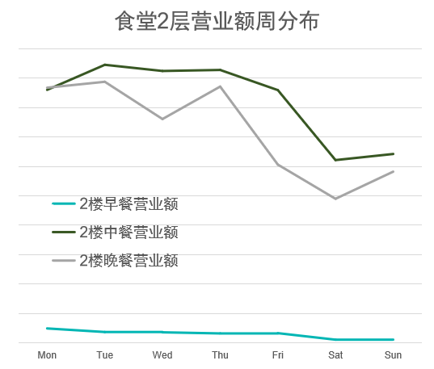
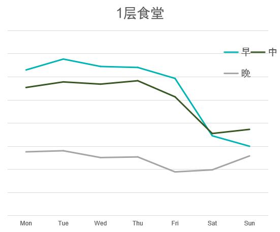

基于校园一卡通数据的用户画像分析展示
国际关系学院
校园一卡通数据用户画像分析

食堂数据分析
我们对于食堂数据的分析，主要通过三个方面进行阐述：
- 我们将根据各楼层窗口销售量与销售额对比分析，为食堂菜系规划提供建议；
- 我们将根据一天中就餐时间分布分析，为同学们错峰就餐提供建议；
- 我们将根据学生就餐习惯分析，为学校教务处和食堂提供建议。
各楼层窗口销售量与销售额对比分析
首先，为发掘不同食堂消费窗口的特点，我们实地调查了食堂各窗口的pos机号对应售卖的菜品，一楼和二楼的菜品分布如下表：

一楼
下图为食堂一楼各窗口的销售量与平均消费金额的对比图：

由上图我们可以得出同学们在食堂各窗口消费的特点：
- 焖锅汤锅的消费水平最高，加上要等待的时间较长，造成销售量较低，建议降价销售；
- 销售量最高的窗口是小卖部的窗口，它的平均消费金额较低，同学们光顾的会比较多；
- 基本伙食和黄焖鸡的销量较大，经调查得知同学们对黄焖鸡比较喜爱，造成了虽然需要等待时间但仍然销售量不减的情况，食堂可以推进黄焖鸡口味的发展；
- 石锅拌饭的销售量最低，原因是等待时间过长，且消费水平较高，一般在时间充裕并且余额充足的情况下才会选择就餐。
- 其余窗口一般由于菜品都为成品，售卖速度较快，避免了排队，易受大家喜爱。
二楼
以下为食堂二楼一年内的各窗口销售量和平均消费金额对比图：

我们发现食堂二楼的窗口1消费人数少，消费金额明显高于其他各个窗口，考察后发现，该窗口是麻辣香锅窗口，由于15元起售的特点，导致窗口的平均销售额将近20元；
由于窗口1的消费金额明显超过其他窗口的平均金额，因此排除窗口1的高消费数据干扰后，
食堂二楼的销售情况如下：

由此我们可以得出结论：
- 米线窗口18的销售量最大，原因可能是价格实惠并且口味适合大多数人，而现在这个窗口已经消失了，经过调查得知很多同学都很怀念，因此我们建议学校能坚持开米线的窗口；
- 清真食堂窗口17价格较高但销售量仍然很大，经调查得知同学们反映其他窗口的口味大都差不多，吃久了容易腻，而清真食堂的口味则截然不同，往往更能激发同学们的食欲。因此尽管清真食堂价格昂贵，同学们仍愿意选择去清真食堂就餐，由此可以看出食堂菜品口味的重要性；
- 同样消费水平在十元左右的韩式扒饭、麻辣烫、烤肉拌饭窗口的消费量依次下降，且韩式扒饭远高于后者，原因是韩式扒饭的菜品种类多，口味较基本伙食好，而麻辣烫虽口味不错，由于现做造成的等待时间过长，大多时间匆忙的同学不会选择就餐，烤肉拌饭则因为菜种稀少，可选择余地过少，造成同学们并不愿意一直在此窗口就餐，容易吃腻；由此看出菜品种类、等待时间对于提升一个窗口销售额的重要性；
- 基本伙食销售量偏好的窗口大多位于食堂正中间，反映了同学们就餐图方便的一般特性，一个窗口的位置也很能影响它的消费水平。
一天中就餐时间分布分析
下面是学生就餐时间分布图：

从上图中我们可以看出：
- 早餐主要集中在7：50左右，即早课前的几分钟。大家会购买早餐带到教室食用，由此可见大部分人没办法做到提前早起在食堂吃早饭。7点之后的早饭小高峰，主要原因是升旗和早操。大一和大二的同学们升旗之后都会在食堂吃过早饭。九点和十点之后的小高峰，主要由于早上8点前来不及去食堂吃早餐的同学们会选择下课赶去食堂购买早餐。
- 午餐的高峰在12点后，同学们刚下课，全部涌到食堂吃饭。而没有第四节课的同学大多会选择11:40左右开始去食堂就餐，造成次高峰。
- 晚餐的分布情况较为平和，不存在过多的拥挤问题，高峰主要集中在18:15~18:35左右。
建议
对同学们：
同学们如果对于打饭速度有着较高的追求，则应选择错峰就餐，具体错开时间段为：
- 早餐：7:50前后，即早课之前的十分钟内；
- 午餐：第四节课刚下课（12:05~12:20）；
- 晚餐：第九节课刚下课（18:00左右）、第十节课上课前的半个小时内（18:15~18:35左右）。
具体要求有早课的同学们做到尽量早起，提前去食堂就餐；上午第四节有课的同学们可以错开刚下课的时间就餐；对于没有第九节课的同学尽量提早在六点以前去食堂就餐。
对学校食堂：
- 学校可以在以上三餐的高峰时间点做好相应措施，比如提前准备好充足的饭菜成品、在高峰分配更多的工作人员为同学们打菜、准备更多的桌椅等，以避免发生拥挤、找不到座位等现象。
- 值得食堂注意的是在次高峰要提前安排更多地工作人员为同学们打菜，比如早上9点、10点（这个时间段食堂往往会因为较长一段时间就餐人数少而容易出现工作人短缺的情况，但是同学们则大都很赶时间）、中午11:30之后开始增加人手等。
对学校：
- 由晚餐就餐时间分布可知，因为许多同学第八节课就可以结束下午的课程，食堂不存在太大关于晚高峰就餐的问题，而午餐则存在明显高峰期。因此学校可以考虑延长午休时间，这样也会适当缓解高峰现象。
学生就餐习惯分析
以下分别为一、二层食堂三餐的营业额和销售量的周分布图：




分别对比：
- 从一楼食堂三餐的营业额与销售量来看，由于早餐同学们往往会在多个窗口购买早餐，造成早上所统计的消费次数会在实际消费人数可能不如午餐晚餐的情况下，早餐销售次数高于二餐。很多同学由于工作日早晨时间紧张，来不及点外卖或出去吃，所以在周一到周五，早饭的销售人次会高于周末。而周末大家会存在睡懒觉的情况，所以吃早饭的人数大大下降。由于早餐价格较便宜，因此即使购买人数很多，但销售额仍低于午饭和晚饭。
- 从二楼食堂三餐的营业额与销售量来看，二楼早餐十分不受同学们欢迎，原因是早上时间比较匆忙，同学们往往为了按时上课而放弃早餐爬楼。二楼的晚餐营业额比一楼的晚餐营业额高，原因是二楼各窗口的消费水平较高。二楼午餐的销售量远大于晚餐。可能二楼晚餐更新程度没有午餐那么好，并不能很好的吸引大家就餐。建议二楼加大早餐丰盛力度，不断提升早餐质量。也呼吁同学们多去二楼吃早饭，避免拥挤。
两层互相对比：
- 整体看来，同学们中餐的消费最大，晚上可能由于洗澡上课没时间吃、减肥不吃晚饭或是外出用餐等原因造成销售量减少，因此学校可以在晚餐推出好吃新鲜的菜品激发同学们的晚餐兴趣来提升消费量。
- 同学们午餐晚餐用餐的人次从周四开始到周六达到了最低值，说明大多数同学会选择在周六放松自己，外出用餐或是点外卖，而周日开始准备绷紧神经再一次加入到紧张的一周中来，说明国关的同学们很懂得劳逸结合，有松有驰。
- 此外需要指出的是，从周四开始，早餐的消费人次和销售额都持续下降，这从侧面反映出同学们的持续精力在每一周的周四到达极限，从周五开始同学们会开始变得浮躁，更多的选择出去吃饭或者点外卖来犒劳自己的身心，到达劳逸结合的目的。
给学校教务处的建议：
由我们通过分析同学们一周内在食堂的消费次数，推测出同学们在周五时容易浮躁，由此建议学校教务处在排课的时候，尽量不要把非常重要的专业课等排在周五，而应该把大多数通识选修等轻松愉悦的课程排在周五，从而能让师生能在一个更好的氛围中度过。
三餐就餐时间平均方差分布分析

分析
- 由同学们的就餐时间平均方差分布可知，大多数同学的就餐时间比较有规律，经综合分析得出，大多数就餐时间规律的同学往往较多集中于高峰进行就餐，而高峰时间往往和下课时间密切相关
结论和建议
- 我们发现，课程的分布对同学们的就餐规律性有着较大的促进作用，上课会促进同学们的规律就餐和健康生活习惯的养成，学校可以通过合理调整上课时间来调整同学们的作息，尽量向有益于同学们的健康的方向调整。但另一方面，上课时间同样会对食堂就餐高峰带来较大的影响，要求食堂规划和学校课程安排时间也有一定的平衡，这方面需要学校进行更为合理的协调。